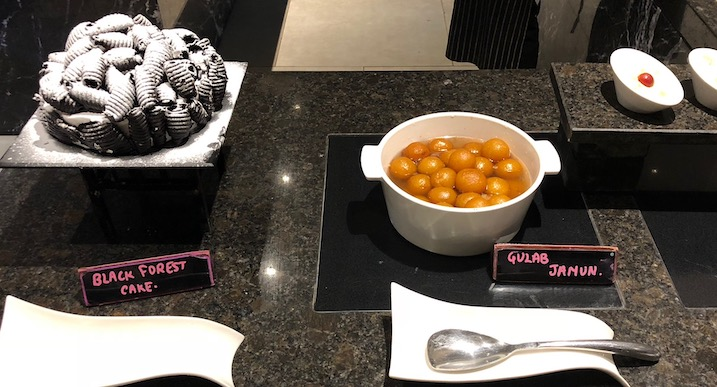

Food Ratri - the midnight buffet festival in Indore, for the garba after-party !! Head to Indore Marriott hotel, on any night between 10th and 31st October, 2018, from midnight (12:00 AM) to 3: 00 AM for enjoying rocking and delicious food after the garba parties !!
The buffet offers special vegetarian food including salads, fruits, Indian main-courses such as biryaani, chhole-kulche, and paneer, fasting (falahari) specials like sabudana khichadi and daal wadaa, vegetables, and of course the desserts !! All this at the Midnight Buffet for only INR 400/person (all inclusive) !!
